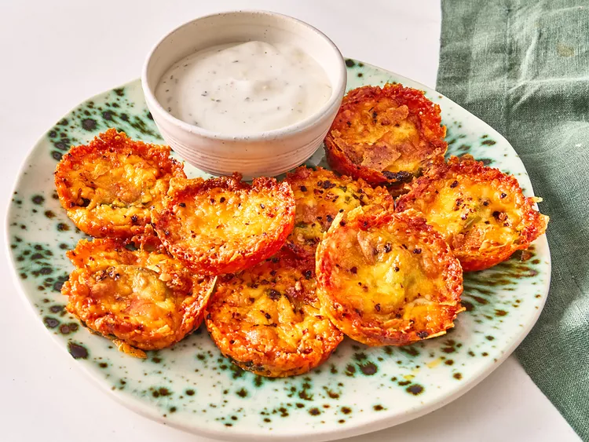

Cheesy Pickle Chips

Description
Baked pickle and cheese chips sprinkled with pepper.
Ingredients
- 24 dill pickle slices
- 2 1/2 cups shredded Cheddar cheese
- 1/2 teaspoon crushed red pepper
- ranch dressing for dipping (optional)
Directions
- Preheat the oven to 400 degrees F (200 degrees C).
- Place about 1 tablespoon cheese in the bottom of 12 muffin cups. Top cheese with 2 pickle slices and remaining cheese. Sprinkle with red pepper.
- Bake until browned and crisp around the edges, about 25 minutes. Let stand for 10 minutes, then drain on paper towels to cool.
Home